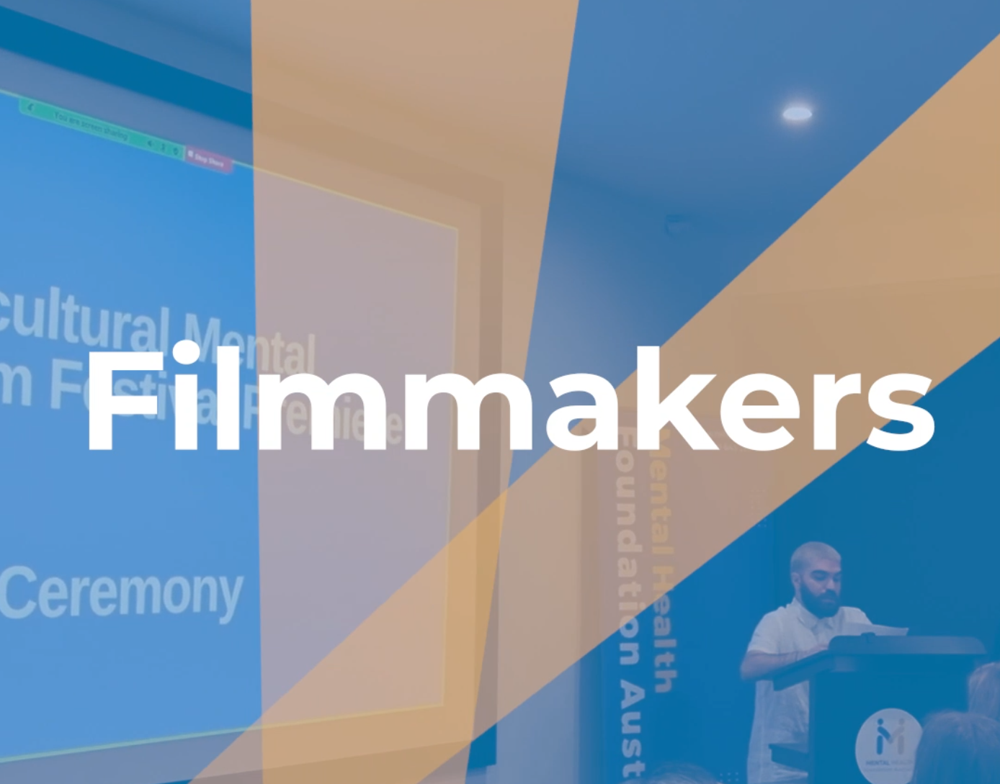
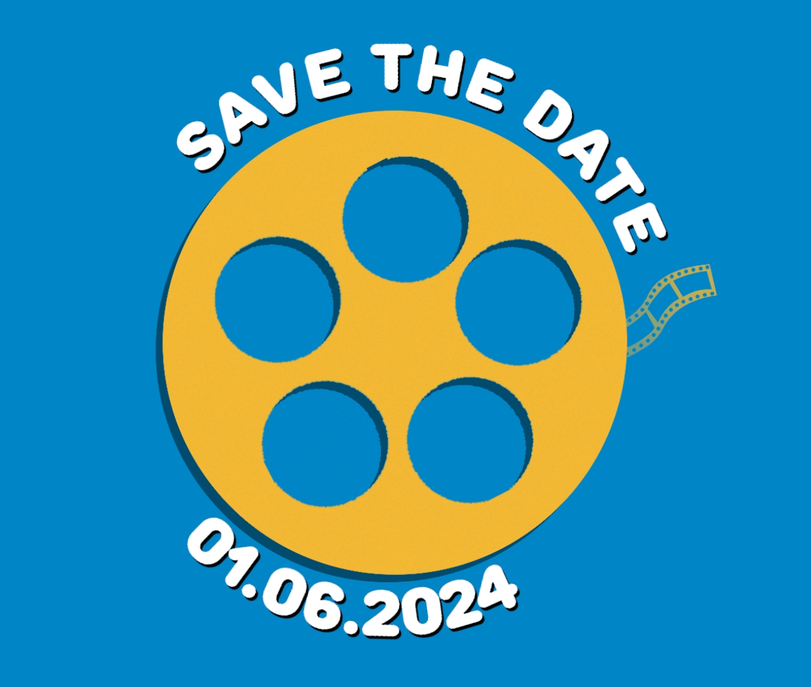

LINK TO MEDIA FOLDER INCASE THE VIDEOS DON'T LOAD
CLICK HERE
First day in the office! Was mainly IT setup and a general induction into their team and goals. Did a little bit of company research on previous projects to see their style as well as browsed their branding assets for me to use and adhere to during my works.
Began working with another design intern and brainstormed ideas for a teaser video/advertisement to promote a new phone app being developed. Following this we story boarded two ideas and discussing and locking in these plans with our supervisor.
Set out to film the footage for the first teaser video project, using our phone and a tripod. Under the supervision of my supervisor we filmed around South Yarra station with the focus subject being our kind programmer who offered to be our actor. Once this filming was done, I began to collate and splice the footage together to bring our idea to life.
Put a pause on the teaser video editing and was set to create a small intro graphic for their new video podcast season. Started and finished it by the end of the day!
Created little graphics to implement into the teaser video and finished the basic editing. After this we had a small group discussion amongst the other interns about how it looks so far and recieved lots of helpful feedback and ideas to enhance the video.
Continued to edit together the teaser video, adding effects, sound and music. Smoothed out all animations and was taught lots of useful tips about colour correcting while fixing up the footage. I then proceded to show the entire office making sure they liked it and didn't have anything to add or change!
After discussing with my supervisor, we tried to make a shorter form teaser video using the left over footage. I spliced it together with basic sounds and effects and decided it needed a little extra. We ended the day with another team brainstorm and landed on a nice script for a voice over and small animatic for me to put into the video about using the app in your everyday busy life.
Finished editing and polishing the main video and began the small animatic. During this we recorded the voice over and I helped setup the cameras for the filming of their first video podcast episode, learning lots about the importance of a good setup to save the edting headache down the line! Once this was done I managed to finish the animation and complete the 2nd teaser video!
I recieved a new plan for another advertisement video promoting the app more targeted at busy students! She was keen to get filming due to the good weather and we set out recording lots of footage with the other interns who elected to be our actors in this video. Once this was done I began editing and splicing it all together, double checking the vision for the video my supervisor had in mind.
Today I simply continued to edit this 3rd video. I struggled a lot with the colour correcting, but I'm waiting for the help of one their members who was in the film industry and has experience editing to give me a hand once he's back in the office.
Today I started and finished a short 2D animation to promote their annual Multicultural Mental Health Film Festival!
Following the popularity of the first animation for the film festival. I began making another animation to show off their film categories and discussed with the team what kind of theme they wanted to implement into these advertisements regarding the music.
After finishing this new animation for the categories of the film festival. I went back and turned both animations into square, 16:9 and 9:16 versions so they could promote it on any platform of their choosing, whenever they're ready to.
Today we brainstormed some new ideas for other animations or advertisements that I can work on to help promote the film festival. I also participated in some testing for the phone app mentioned earlier as it is in its final stages before beginning the promotional campaigns and then release.
After talking with my supervisor, today I brainstormed, storyboarded and script wrote a piece about the film festival director.
As the director was in the office today, I spent the morning setting up the film set and talking to him about what kind of video it was and his part in it. Then we spent the rest of the day shooting, which took the whole day due to some technical and timing difficulties.
I then spent all day splicing the footage together into a coherent 3 minute video, ensuring the core messages and meanings were conveyed while maintaining an upbeat vibe.
Today I started the more visual editing of the meet the director video with the title cards and little animations and text on the screen. Was fully stuck to my screen today.
Finally making the end version of that meet the director video and making minor adjustments after showing the team and director himself. Followed by some preparation for some Intern Experience videos proposed by my supervisisor.
Today was super fun. I got to spend the whole day stealing people away to film their intern experience videos revolving around who they are and what they hope to or have done during their internship as well as talk about working at the MHFA as a whole. It was great to hear more from people and their works.
Another big recording day today as we made a "meet the devs behind the app" video for another promotional video for the app earlier in the internship to promote the wonderful programmers we had working on it. As well as this, there was a celebration presentation to all the heads at MHFA our respective sponsors to meet and show off the new app before the very near release. I was tasked with recording the presentations.
Big editing day, figuring out and seperating all the new footage for the few intern experience videos, some esl promotion videos and that behind the app video. mainly spliced everything together to get it ready for proper editing and polishing later in the week.
Finished putting together and editing multiple intern experience videos while making some more touches to previously 'finished' content due to some dates changing. (here is an example of 1 experience video)
Today was a bit of a curveball with some other animations and voice recordings to be made for the festival as per request of the film director. Got most of it finished within the day, just needed to confirm a few things and have it approved as completed.
Finalised those new animations for the festival using previous assets and some new, awesome ones from another design intern.


Finally started on the true editing of the behind the app video while getting some B-Roll to add to the experience. Made it mostly through the video with some minor animations and SFX to be added tomorrow.
Today I finished making the behind the app video after some final adjustments and spent the rest of the day double checking every single piece of content I made for the foundation was up to my standard and showing my supervisors to ensure they are all good to go for when they want to use them.
On my final day I completed some off-boarding documents, ensured I had uploaded all my assets and designs and had some help updating my LinekdIn. There was a small thank you award given to my and a heartfelt goodbye. I am forever grateful for this experience.